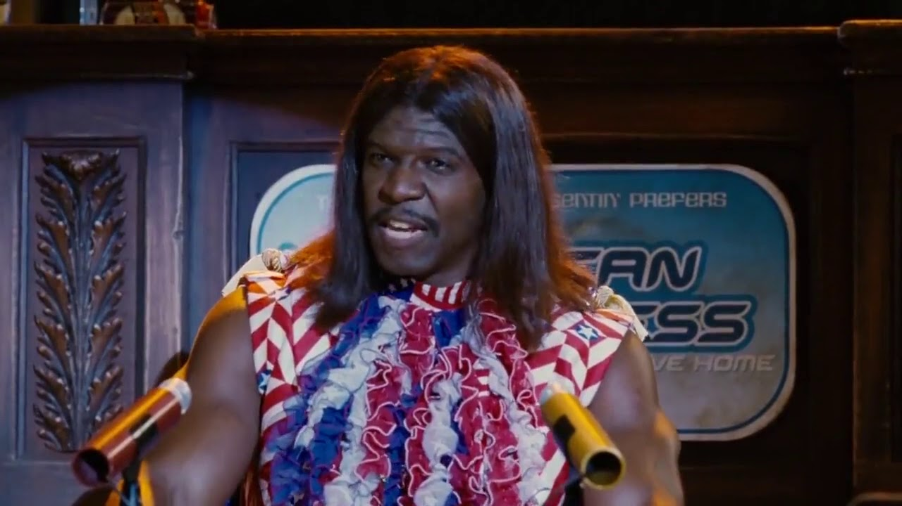

What kind of question is that? Shiiittt. Why anybody whos anybody knows who president Camacho in 2505. But it ain't even 2506 yet now is it? We gotta go all prehistoric just so yo' simple brains can contain it.
So look it's like this. Camacho begins his career as a porn star, with his devilish good looks n' all. But soon come to find out that even though women is good, power is better. So he did what any heavily exfoliated muscular man with glorious hair would do and he becomes a pro wrestler. How good was he you ask? Only the five time Ultimate Smackdown Champion. And there is only one place you can go after reaching that kinda status. Oh yeah, all the way to the top baby.
After winnin' the favor of the people, and being second smartest man alive, after Not Sure, and bein' half brain, half brawn, and half oratory genius, he was elected as the president of Uhmerica. All would be well, at least until the dust toilet bowl of 2505.
See, Camacho humbles himself and knows to surround himself with the smartest people. That's why he had Not Sure travel from the past to fix the crop growin' issue. Who wouldda' thought that plants don't need no electrolytes? Only a genius like Not Sure. All was good, until they run outta' cheeze and forgot the recipe. Have you ever had pizza with no cheeze man?
So he is back to our time in 2023 to get the recipe. How'd he get here do you ask? Nobody knows, nobody cares, but what we do know, is this:
Camacho needs your vote so he can fix all our problems once again...